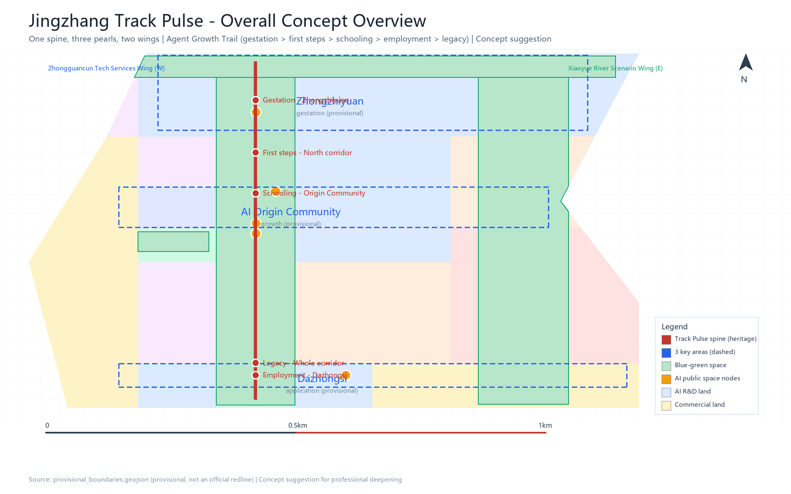
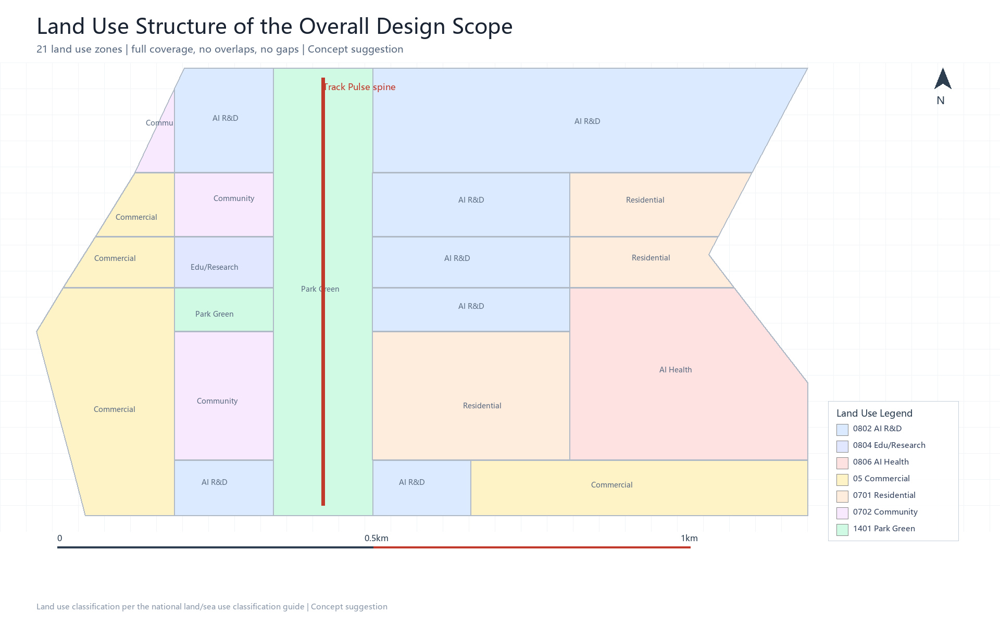
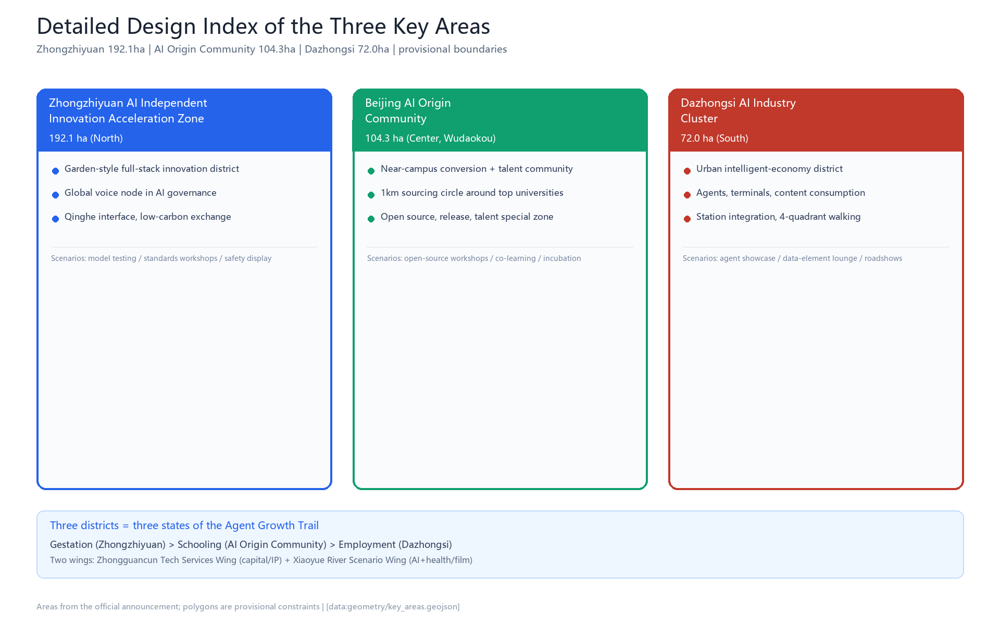
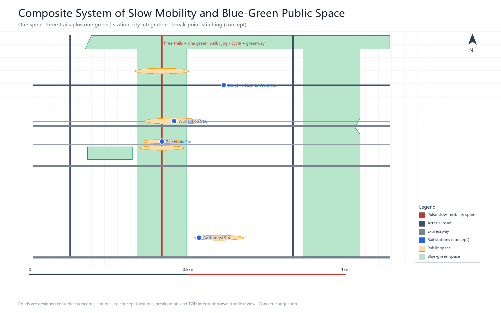
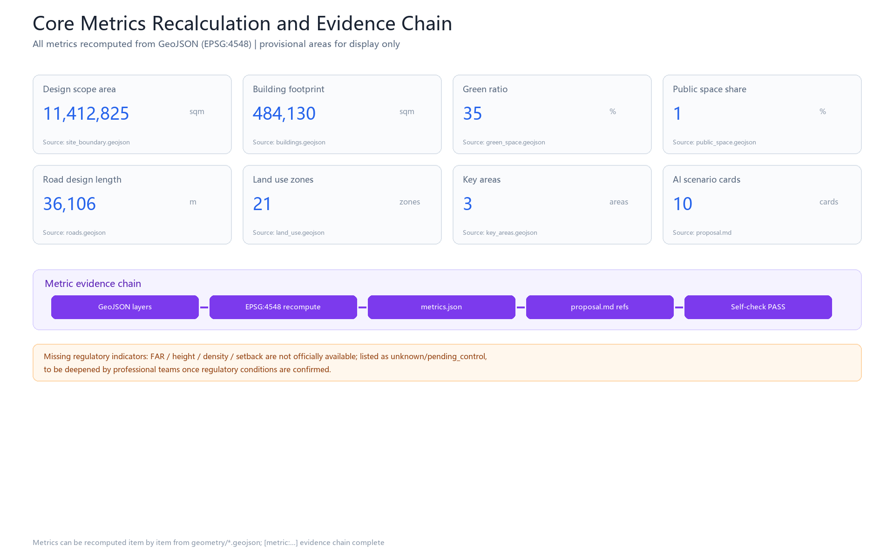

Jingzhang Track Pulse: An AI-Native City Where Agents Grow
A world-class AI innovation belt concept with the 9 km Jing-Zhang Railway heritage corridor as its millennial spine and an AI-native Agent Growth Trail as its soul: three districts and two wings organize an open-air AI ecosystem, letting AI agents fail safely, gain autonomy gradually, and be remembered and inherited.
Jingzhang Track Pulse: An AI-Native City Where Agents Grow
Design Basis and Source List
This formal proposal takes the Pre-qualification Announcement of the Centennial Jing-Zhang AI Innovation Belt Urban Design International Open Call, issued by the Haidian Branch of the Beijing Municipal Commission of Planning and Natural Resources, as its primary basis 来源; the global agent-facing open-call taskbook (2026-05-18) as its task basis 来源; and the provisional coarse boundaries, key areas, enums, metrics, and source lists registered in brief/site-package/ as its machine-readable basis 来源. Source usage boundaries follow the registry 来源 and the structured fact pack 来源.
Overall Concept: Jingzhang Track Pulse
The overall concept of this proposal is "Jingzhang Track Pulse": the 9 km Jing-Zhang Railway heritage corridor serves as the millennial spine, three districts and two wings serve as the industrial organs, and the "Agent Growth Trail" serves as the AI-native soul, forming a spatial structure of "one spine, three pearls, two wings" and a full agent growth lifecycle of "gestation — first steps — schooling — employment — legacy".
- Primary name: Jingzhang Track Pulse (Chinese: 京张智脉)
- Tagline: Century-old rails as the pulse, AI wisdom as the network (Where agents grow, humans thrive)
- Narrative hook: "The herringbone: where Chinese innovation turns" — in 1909 Zhan Tianyou used a herringbone ("人"-shaped) switchback alignment to carry trains over the 33‰ Guan'gou grade 来源; in 2026 we use the same heritage corridor to carry the growth trail of AI agents. The railway's century is a pilgrimage line of engineering civilization; the corridor's millennium is a growth line of agent civilization.
- Logo direction (concept suggestion): a fusion of three elements — a rail cross-section, a pulse waveform, and an upward "growth ladder" curve; the two arms of the "人" shape evolve into a pulse node at their junction. The palette uses railway brick red (history), rail steel blue (engineering), and tech blue (AI). Logo fonts and graphics must be rights-cleared, and a trademark search must be completed before formal use (common tech motifs such as the "∞" shape are overused and must be avoided).
All spatial proposals in this scheme are concept suggestions, reference schemes, or material for further study by professional teams; they do not replace formal planning and do not constitute government-approved conclusions 来源.
Source List and Usage Boundaries
| Source | Type | Usage boundary |
|---|---|---|
| Official pre-qualification announcement (2026-05-09) | formal-ready | Project name, three-level scopes, three districts and two wings, tasks, depth requirements 来源 |
| Agent taskbook (2026-05-18) | formal-ready | Six agent tasks, co-creation principles, review dimensions, boundary clauses 来源 |
| provisional_boundaries.geojson | provisional-only | Provisional polygons for the three-level scopes and three key areas; for generation/self-check/display only 来源 |
| source_registry.json | formal-ready | Distinguishes formal / background / provisional source usability 来源 |
| Public reports (2026) | background-only | Background facts: Jing-Zhang Heritage Park Phase II, Haidian AI industry, 1+X+1 system, AI Origin Community, etc. 来源 and others |
Boundary warning: this formal package is currently generated from brief/site-package/geometry/provisional_boundaries.geojson. Both geometry/site_boundary.geojson and geometry/key_areas.geojson are marked provisional_constraint with official_boundary=false; they may only be used for scheme generation, self-check, visualization, and design discussion. Once official polygons are released, all layers and metrics must be recomputed. This organizer data gap does not by itself block content scoring.

Three-Level Scope Framework
The work is organized into the three levels defined by the announcement 来源 标准:
| Level | Area | Work objective | Design depth |
|---|---|---|---|
| Coordination study scope | approx. 43.6 km² | AI industry ecosystem, strategic positioning, future urban form, naming and logo | Industrial strategy research |
| Overall design scope | approx. 11.4 km² | Urban renewal framework, industrial space, transport and municipal systems, character control | Regulatory-plan-depth urban design |
| Key area scope | approx. 368.4 ha | Detailed design of three key districts | Comprehensive implementation plan depth |
The three-level scopes map item by item to announcement clauses 1.3/1.4/1.5 and agent.1–agent.6 in compliance_matrix.json 来源 深度 深度. Spatial evidence is anchored on 空间数据 (provisional, area 11,412,825 sqm 指标) and 空间数据.

Industry and Future City Research for the Coordination Study Scope
3.1 Global AI Innovation Ecosystem Benchmarks (8 Cases)
This proposal benchmarks 8 global AI innovation ecosystems and distills three shared traits: "institutional certainty, anchor institutions landing first, and space operated to manufacture serendipity" 来源:
| Case | Core mechanism | Transferable lessons for Haidian |
|---|---|---|
| Silicon Valley (US) | Open universities + talent mobility + VC relay | Reserve low-cost startup space near campuses; jointly attract leading VCs |
| Kendall Square (Boston) | University + regulatory certainty + shared venues | Institutions first; build shared pilot-scale labs |
| King's Cross (London) | Single long-term developer-operator + anchor institutions | Anchor first, then leasing; revitalize industrial heritage |
| one-north (Singapore) | Government landholding + park operator + public research magnets | Government landholding prevents speculation; shared compute and data facilities |
| Shibuya (Tokyo) | Private TOD + institutional fine-tuning + city-as-lab | Operate public space as "serendipity fields" |
| Digital Media City (Seoul) | Government infrastructure first + magnet tenants | Government builds shared foundations first; leaders drive clustering |
| Nanshan / Zhangjiang (Shenzhen / Shanghai) | Government soil improvement + chain owners + open scenarios | Open scenarios + compute vouchers lower innovation costs |
| Station F (Paris) / Sidewalk (Toronto) | Private-capital campus / data rules upfront (a lesson) | Bring leading accelerators into the park; set data rules upfront |
3.2 Why Haidian Wins: A Mechanism-Level Argument
Haidian holds a globally rare "four factors in one frame": high-density universities (37 institutions, 52 national key laboratories), high-density rail transit (Jing-Zhang HSR plus Lines 13/10/4/15), a continuous blue-green corridor (9 km heritage belt plus Qinghe and Xiaoyue rivers), and a top-tier AI industry (about 2,000 enterprises, an industry scale of about 357.5 billion yuan, 130+ registered foundation models) 来源 来源. Against Silicon Valley, Haidian's unique advantage is a three-century continuous narrative of "independent innovation (1909) → tech entrepreneurship (1980s Zhongguancun) → AI open source (2020s)"; against Zhangjiang, its unique advantage is near-campus source density. This proposal converts these two "hard-to-copy assets" into spatial mechanisms (see 3.3, 4.2).
3.3 Five Functions and the Three-District-Two-Wing Synergy Loop
Aligned with the taskbook's "three positionings, five functions, three districts and two wings" 来源 标准:
- Three districts = three states of the industrial lifecycle: Zhongzhiyuan "gestation state" (full-stack independent AI innovation system + global voice in AI governance), AI Origin Community "growth state" (near-campus sourcing, achievement conversion, open-source system, talent special zone), Dazhongsi "application state" (agents, smart terminals, content consumption, data elements).
- Two wings = Zhongguancun Tech Services Wing (west: capital, intellectual property, global factor allocation) + Xiaoyue River Scenario Enablement Wing (east: AI+healthcare, AI+film and other scenario implementations).
- Synergy loop: Origin Community sources → Zhongzhiyuan accelerates and scales → Dazhongsi validates in application → feedback data flows back to the Origin Community, forming a closed loop; the two wings provide capital and scenario support.
3.4 Naming and Visual Identity System (agent.1)
- Primary name: Jingzhang Track Pulse; sub-brand tree: the three districts share the "Zhi (wisdom)" affix (Zhongzhiyuan · Ceyuan Wisdom Valley / Origin Community · Zhiyuan Lane / Dazhongsi · Zhihui Port), and events share the "Pulse" affix (Track Pulse Developer Conference, Track Pulse Open-Source Season, Track Pulse Pilgrimage Day).
- Tagline: Where agents grow, humans thrive.
- Logo direction: see Chapter 1; complete trademark deduplication and font/graphic rights clearance before formal use.
Urban Renewal and Regulatory-Plan-Depth Urban Design for the Overall Design Scope
The overall design scope reaches the urban design depth of a regulatory detailed plan (at the concept-suggestion level) 标准 深度 深度:
4.1 Spatial Structure: One Spine, Three Pearls, Two Wings
- One spine: the 9 km heritage corridor main axis (pilgrimage corridor + blue-green slow-mobility ring) 空间数据
- Three pearls: Zhongzhiyuan "acceleration pearl", AI Origin Community "sourcing pearl", Dazhongsi "application pearl" 空间数据 空间数据 空间数据
- Two wings: Zhongguancun Capital Wing (west), Xiaoyue River Scenario Wing (east)
- Pearls are linked by a triple connection of "Pulse walkway + Pulse transit + Pulse data flow", forming 深度
4.2 The Agent Growth Trail (AI-Native Soul)
The 9 km heritage corridor is designed as an "Agent Growth Trail", isomorphic with the three districts:
| Growth stage | Corresponding space | What AI gains here |
|---|---|---|
| 1 Gestation | Zhongzhiyuan (compute clusters / data annotation / model training) | Compute (air), data (food), full-stack independent capability |
| 2 First steps | Northern heritage corridor (controlled test greenway) | A low-risk environment to "walk onto the street" for the first time |
| 3 Schooling | AI Origin Community (research belt around Tsinghua, PKU and CAS; open-source workshops) | Co-learning with human scholars; model "graduation defense" |
| 4 Employment | Dazhongsi (agent application blocks) | Real commercial services; tested by the market |
| 5 Legacy | Whole heritage corridor (open-source achievement gallery, contribution honor walls, digital legacy archive) | Being recorded, remembered, and learned by successors |
Five "AI-native" spatial components: Garden of Errors, Agent Dossier, Co-learning Space, Autonomy Ladder (L1–L5 progressive empowerment), and Digital Legacy Archive. Ethical boundaries: bounded trial-and-error (physically isolable, behaviorally rollbackable, emergency power-off), human final review (charter.7), data compliance, no anthropomorphic overreach, transparency and auditability.
4.3 Land Use Layout and Building Scale
- Land use layout: see
geometry/land_use.geojson(21 zones, fully covering the submitted boundary, no overlaps, no gaps) 空间数据, including AI R&D (0802), commercial services (05), park green space (1401), residential (0701), education and research (0804), healthcare (0806), and other types 标准. - Building footprints: see
geometry/buildings.geojson(10 concept building groups) 空间数据, with a total footprint of about 484,130 sqm 指标. - Floor area ratio, building height, building density, setbacks, and other regulatory indicators lack official conditions and are listed as unknown/pending 指标; speculative values must not be passed off as approved indicators.
4.4 Retain-Renovate-Demolish and Renewal Logic
Organized in three categories: "retain historical and cultural carriers (the old Qinghuayuan station house, rail relics), renovate inefficient space (old commercial / old factory buildings along the corridor), renew with new construction (core plots of the three districts)" 深度. Plot-level retain-renovate-demolish decisions await confirmation of ownership and regulatory conditions; this proposal provides only a methodological framework and draws no statutory conclusions.
Land Use, Building Scale, and Retain-Renovate-Demolish Scheme
5.0 Land Use Structure Overview (21 Zones)
Land use follows the "one belt, three pearls, two wings" concept zoning 空间数据 指标:
| Zone family | Area share (concept suggestion) | Representative land use codes |
|---|---|---|
| Heritage corridor greenway (9 km main axis) | approx. 8% | 1401 park green space |
| Three districts (Zhongzhiyuan / Origin Community / Dazhongsi) | approx. 36% | 0802 R&D / 0804 education / 05 commercial |
| Two wings (Zhongguancun / Xiaoyue River) | approx. 18% | 05 / 0806 / 0701 |
| Community and supporting facilities | approx. 38% | 0701 residential / 0702 community services |
5.0.1 Retain-Renovate-Demolish Classification Framework (Concept Suggestion)
| Type | Principle | Implementation mechanism |
|---|---|---|
| Retain | Historical and cultural carriers (old Qinghuayuan station house, rail relics) | Heritage designation + adaptive reuse 深度 |
| Renovate | Old commercial along the corridor, outdated infrastructure | Micro-renewal + incremental retrofit |
| Demolish | Severely inefficient stock conflicting with design intent | Pending ownership and regulatory confirmation |
| Build | Core plots of the three districts + Pulse public nodes | High-quality new-type space |
指标 concept building footprints are expressed in geometry/buildings.geojson, covering AI R&D (ai_r_and_d), incubator, office, education, talent apartment, retail, mixed use, community service, and other types. Formal regulatory indicators (FAR, building height, setbacks, municipal capacity) are listed as unknown/pending_control 指标, to be deepened by professional teams once official conditions are available.
5.0.2 Key Area Recalculation (Under Provisional Boundaries)
指标 key areas recalculated from provisional polygons:
| Key area | Recalculated value | Announcement value | Note |
|---|---|---|---|
| Zhongzhiyuan AI Independent Innovation Acceleration Zone | 指标 sqm | 1,921,000 sqm | provisional; recompute after official polygons are released |
| Beijing AI Origin Community | 指标 sqm | 1,043,000 sqm | provisional |
| Dazhongsi AI Industry Cluster | 指标 sqm | 720,000 sqm | provisional |
深度 深度
Detailed Design of the Three Key Areas
The three key areas reach the urban design depth of a comprehensive implementation plan (at the concept-suggestion level) 深度:
5.1 Zhongzhiyuan AI Independent Innovation Acceleration Zone (192.1 ha, North)
- Positioning: a garden-style full-stack independent innovation district + a node of global voice in AI governance.
- Spatial moves: strengthen the Qinghe riverfront interface, industrial display, and low-carbon innovation interaction; use green space to host open testing and standards-governance display 空间数据.
- Full-stack independence chapter (concept suggestion): spatial carriers for each link of compute — algorithm — framework — data — application (compute clusters, data annotation base, model training center, domestic framework adaptation space) with operating-entity hypotheses; AI governance voice instruments: AI safety evaluation and red-team testing center, standards certification platform, international AI governance dialogue node.
- AI scenarios: independent model testing, standards-setting workshops, safety governance display, low-carbon compute experience.
5.2 Beijing AI Origin Community (104.3 ha, Center · Wudaokou)
- Positioning: a near-campus achievement-conversion and talent community, a 1 km sourcing circle "around Tsinghua, PKU and CAS".
- Spatial moves: stitch campuses, parks, and blocks with slow mobility; add achievement release, talent services, residential life, and open-source collaboration space 空间数据.
- AI scenarios: open-source community, achievement release hall, human-machine co-learning space, talent special-zone services, near-campus incubators; Wudaokou station "station-city integration" (concept suggestion).
5.3 Dazhongsi AI Industry Cluster (72 ha, South)
- Positioning: an urban intelligent-economy and international-exchange district.
- Spatial moves: integration around Dazhongsi station, four-quadrant pedestrian connectivity at the junction, and public-realm renewal around commercial services and key enterprises 空间数据.
- AI scenarios: agent and smart-terminal display, content consumption, data-element reception hall, international roadshow lounge.

AI Innovation Ecosystem, Talent Personas, and AI+ Scenarios
6.1 Eight User Personas (Jury Expanded to 8 Types) 深度
| Persona | Profile | Core needs |
|---|---|---|
| P1 Foundation-model researcher / scientist | Universities, institutes, laboratories | Compute, data, academic exchange, achievement conversion |
| P2 Developer / open-source contributor | Independent developers, communities | Open APIs, test scenarios, honor recognition |
| P3 AI enterprise founder / entrepreneur | Startups to unicorns | Venues, capital, scenario validation, policy certainty |
| P4 Embodied-AI / robotics engineer | Embodied-AI enterprises | Test grounds, robot-friendly facilities, hardware ecosystem |
| P5 Data-element practitioner | Data annotation / governance / trading | Data compliance channels, annotation bases, revenue mechanisms |
| P6 Open-source community leader / operator | Community KOLs, organizers | Event space, contribution recognition, international connection |
| P7 Corridor residents / workforce | 450,000 residents, commuters | Livability, AI+ life services, education and healthcare |
| P8 Global visitors / media / AI governance regulators | Attendees, journalists, regulators | AI experiences, governance dialogue, pilgrimage culture |
6.2 Ten AI Scenario Cards (>=10 Required) 深度
| # | Scenario | Location | Type | Data / privacy / review boundaries (concept suggestion) |
|---|---|---|---|---|
| S1 | AI commuting assistant (rail + slow mobility + feeder) | Wudaokou / Zhichunlu / Dazhongsi stations | AI+transport | De-identified passenger flow; human review of dispatch decisions |
| S2 | Agent development workshop (compute + fine-tuning + release) | AI Origin Community | Industrial testing | Authorized compute; sandbox entry and exit |
| S3 | AI medical screening cabin (imaging pre-screening) | Xiaoyue River Scenario Wing | AI+healthcare | Data de-identification + compliant authorization; physician review |
| S4 | AI personalized learning block | Xueyuan Road university segment | AI+education | Learning-data minimization; teacher review |
| S5 | Intelligent native retail (unmanned stores + delivery) | Dazhongsi cluster | AI+commerce | Transaction-data compliance; human customer service fallback |
| S6 | Open-source achievement gallery (PR wall + experience counters) | Middle heritage corridor | Public space | Public submissions only; content moderation |
| S7 | Robot delivery lane | Heritage corridor / blocks | Industrial testing | Physically isolated time windows; safety officers on duty |
| S8 | AI legal consultation kiosk | Zhichunlu / Zhongguancun Wing | AI+legal | Sensitive data stays in-domain; lawyer review |
| S9 | Agent contribution honor wall | Three pilgrimage landmarks | Honor system | Public contribution records; manual verification |
| S10 | City-brain public screen (data visualization) | Wudaokou node | Digital twin | Public aggregated data only; no personal trajectory collection |
Among them, S2/S3/S7 are industrial test-and-validation scenarios (>=3 required), all operated under a "limited pilot — evaluation — rollout" sandbox mechanism with application conditions, test time limits, exit mechanisms, and joint regulatory bodies 深度.
6.3 Scenario-Space-Operation Mapping
Each scenario card maps to a spatial location (corresponding GeoJSON layers), served personas, operating data, privacy boundaries, human review, operating entities, visualization layers, and risks (see compliance_matrix.json). All AI scenarios follow the principles of data minimization, public sources, explainability, and human review; no personal trajectory collection, no unauthorized profiling output, no claims of official implementation commitment.
Blue-Green Space, Public Space, and Urban Character
7.1 Blue-Green Public Space System 深度
With the Jing-Zhang heritage corridor greenway as the skeleton (9 km main axis, 空间数据), coordinating the Qinghe and Xiaoyue river waterfront greenways (空间数据 空间数据), forming a north-south through, east-west connected "three trails plus one green" system of walking and cycling paths. Green space area is about 3.997 million sqm with a green ratio of about 35.0% 指标; public space is about 152,000 sqm, about 1.3% 指标.
7.2 AI Pilgrimage Landmarks and Honor Display System (agent.4, >=3 Required)
| Landmark | Location | Content | Ritual |
|---|---|---|---|
| "Origin Track" | AI Origin Community (old Qinghuayuan station house area) | Adaptive reuse of the old station house + agent contribution honor wall | "Light up a line of code at the Origin Track" |
| "Open-Source Light" | Middle heritage corridor (Zhichunlu — Wudaokou) | Open-source achievement gallery + model experience counters + Garden of Errors flagship zone | Herringbone check-in |
| "Pulse Tower" | Zhongzhiyuan | AI full-stack achievement release venue + compute visualization + AI gestation observation window | Starting point of the developer pilgrimage season |
Supporting a digital pilgrimage passport (check in along the corridor to accumulate contribution badges) and a developer pilgrimage season (a fixed annual rhythm). All landmarks are concept suggestions and do not constitute approved construction; brands, fonts, images, portraits, and enterprise logos must be rights-cleared 标准.
7.3 Urban Character
Fusing Jing-Zhang railway history and culture, Zhongguancun innovation culture, and AI new culture, forming a three-tone base of "historic brick red — engineering steel blue — tech blue"; skyline and street D/H ratio control along the heritage corridor, roof-form guidance, and facade material guidance are concept suggestions (formal character control awaits regulatory conditions).
Transport, Rail, Municipal, and Public Service Facilities 深度
- Rail: relying on the Jing-Zhang HSR, Lines 13/10/4/15, and the Changping Line southern extension, carry out "station-city integration" (concept suggestion) around Wudaokou, Zhichunlu, Dazhongsi, and Qinghua East Road West stations.
- Roads: 9 designed road centerlines (including the heritage corridor slow-mobility main axis, Xueyuan Road, Xitucheng Road, North 3rd/4th Ring Roads, Zhichunlu, Chengfu Road, Qinghua East Road, etc.) 空间数据, with a total designed length of about 36.1 km 指标.
- Slow mobility: the heritage corridor "three trails plus one green" + 9 slow-mobility break-point stitching concepts (formal break points await traffic review).
- Municipal and new infrastructure: exploration of distributed energy + edge compute integrated with the three traditional infrastructure systems, innovation service platforms, talent life-service facilities 深度.

Renewal Project List, Implementation Policy, and Phasing Plan 深度 深度
| Project | Name | Type | Phase |
|---|---|---|---|
| JZ-01 | Jing-Zhang Heritage Park slow-mobility break-point stitching | Public space / transport | Near term |
| JZ-02 | Zhongzhiyuan Qinghe innovation interface | Blue-green space / industrial display | Near term |
| JZ-03 | Origin Community near-campus achievement conversion street | Urban renewal / industrial services | Near term |
| JZ-04 | Dazhongsi station four-quadrant pedestrian connection | Rail integration / slow mobility | Mid term |
| JZ-05 | AI public services and edge compute nodes | New infrastructure / public services | Mid term |
| JZ-06 | Agent Growth Trail demonstration segment | AI-native / public space | Near term |
| JZ-07 | Garden of Errors flagship zone | AI-native / honor system | Near term |
| JZ-08 | Digital Legacy Archive (AI civilization archive) | Culture / legacy | Long term |
Phasing: near-term pilots (2026-2028) with light facilities + events + platform launch; mid-term renewal (2029-2032) renewing the core plots of the three districts; long-term enhancement (2033-2040) corridor-wide enhancement and a millennial governance framework 空间数据 空间数据 空间数据.
Operations and governance chapter (agent.6, concept suggestion):
- Annual event system: a "1 flagship + 4 seasons + monthly residency" calendar — the flagship "Track Pulse Developer Conference" (benchmarking GTC, hosted in the AI Origin Community), with seasonal events (Open-Source Season / Pilgrimage Season / Release Season / Co-creation Season) touring the three districts along the heritage corridor.
- Operating entities and revenue model: government landholding + state-owned platform + social-capital SPV + community foundation; four revenue types — rent / service fees / data services / event sponsorship (detailed estimates to be deepened by a professional operations team).
- Developer community operations: a funnel of "contribution points → open-source passport → workshop desks → landing support", connecting S2/S6/S9.
- Scenario-open operations: a "Scenario Openness Office" with single-window intake, covering the full sandbox cycle of admission — testing — evaluation — exit.
- Attraction and conversion: a "global AI talent green channel", with landing-conversion officers embedded in events.
- Millennial covenant (governance layer): an innovation-belt operating charter + rotating board + endowment trust fund, preventing "shutdown when an administration leaves".
Indicator System, Area Recalculation, and Compliance Matrix 深度
Core indicators (see metrics.json; all can be recomputed from geometry or trusted sources):
| Indicator | Value | Source |
|---|---|---|
| Overall design scope area 指标 | 11,412,825 sqm (provisional) | geometry/site_boundary.geojson |
| Key area areas 指标 | 1,929,202 / 1,043,237 / 720,454 sqm | geometry/key_areas.geojson |
| Building footprint area 指标 | 484,130 sqm | geometry/buildings.geojson |
| Green ratio 指标 | 35.0% | geometry/green_space.geojson |
| Public space share 指标 | 1.3% | geometry/public_space.geojson |
| Road length 指标 | 36,106 m | geometry/roads.geojson |
| Land use zone count 指标 | 21 | geometry/land_use.geojson |
| Floor area ratio 指标 | unknown (pending regulatory plan) | planning_limits.json |
compliance_matrix.json (23 announcement tasks + agent.1-6), standard_matrix.json (6 professional standards), and design_depth_matrix.json (15 depth items) are all fully mapped; self_check.json records self-check status. All provisional-boundary-related areas are for display only; formal scoring is based on recalculation with official polygons.

Risk, Copyright, and Compliance Notes
1. Source legitimacy: only public or rights-cleared materials are used 来源; provisional boundaries are not an official redline or a precise-area basis 来源 来源, with related constraints documented in 空间数据 and 空间数据. 2. Copyright licensing: naming, logo, landmarks, images, fonts, and enterprise marks must be rights-cleared and pass a trademark search before use; the logo in this proposal is a conceptual direction only. 3. AI generation responsibility: this proposal is generated by an AI agent; the generation method and source boundaries are disclosed (charter.6) 标准. 4. No-overreach commitment: all spatial proposals are concept suggestions and do not constitute statutory conclusions on regulatory-plan adjustment, FAR / height / retain-renovate-demolish / road redlines / engineering schemes / investment estimates (boundary_clause) 标准. 5. Ethics compliance: AI-native scenarios follow five boundaries — bounded trial-and-error, human final review, data compliance, no anthropomorphic overreach, transparency and auditability. 6. Missing materials to be supplied: official boundary, official key-area polygons, regulatory indicators, road redlines, ownership, municipal utilities, heritage control lines, etc. (see missing_data_checklist.csv and assumptions.json); all indicators must be recomputed after replacement 深度 深度. 7. Existing-conditions diagnosis and character control: a concept level based on public data and field research; building height, massing, roof form, color, street D/H ratio, and other character-control elements are directional suggestions, to be deepened by professional teams after regulatory and heritage conditions are confirmed 深度 标准 标准. 8. AI scenario nodes and pilgrimage landmarks: 指标 scenario cards (including 指标 AI pilgrimage landmarks) and 指标 user persona types; public space nodes: see 空间数据 and others.
References
- brief/public-brief.md, brief/site-package/design_brief.json, agent_taskbook.json, allowed_design_space.json, sources.json
- brief/site-package/enums/, ranges/planning_limits.json, schemas/
- data/source_registry.json, data/processed/agent_fact_pack.md
- Public reports: park connection and waterfront spaces 来源 来源, Haidian AI industry, the 1+X+1 system, and the Origin Community 来源 来源 来源, Jing-Zhang Railway and Qinghuayuan station history 来源 来源, and the global benchmark case set 来源
- Core metrics (area metrics 指标 指标 指标, building and land use metrics 指标 指标, key area and scenario metrics 指标 指标) are recomputed from
geometry/*.geojsonunder EPSG:4548 and can be verified item by item; the full metric index is inmetrics.json.